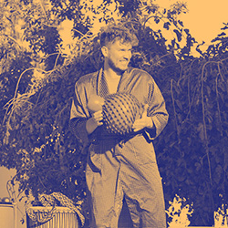
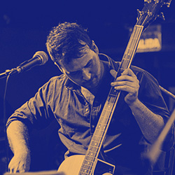
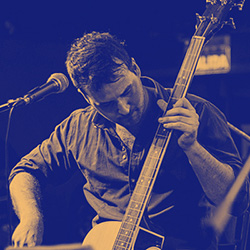
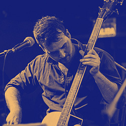

Quienes Somos
Galería
Blog
Agenda
Contacto
Hola! somos Chew Müli Waka
Chew muli waka es un grupo de percusión por lenguaje de señas que nació en el año 2020 en la ciudad de Chivilcoy, al calor de la pandemia y frente al deseo de conectar, compartir, fluir, liberar y enraizar colectivamente a través de los tambores.
Audio de Ensayo
Tema: Portal
Dirección: Flor Cagnone
Wakas
·
Portal
Integrantes



 
